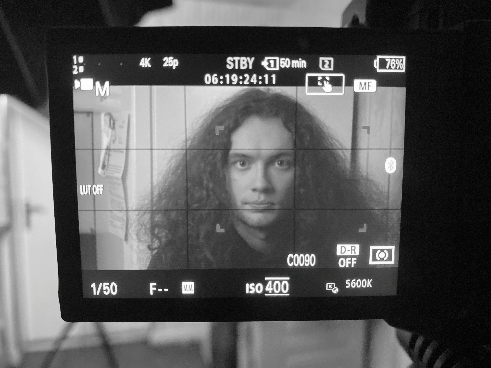
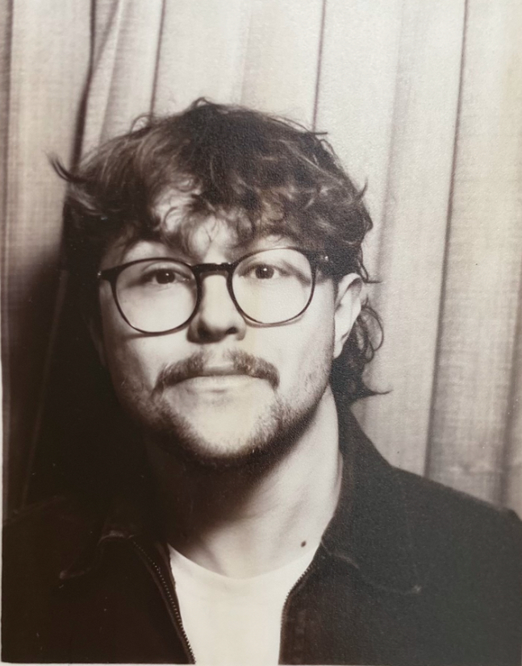

ABOUT US TEST
Skitz Productions is a South Yorkshire-based video production company focused on cinematic storytelling, commercial work and creative projects.

Clem Sheehy
Clem is a South London-based post-production graduate with experience across documentary, commercial and independent film projects. Their work has primarily focused on archival media, combining research, organisation and editing to shape compelling narratives from existing footage.
With over five years of experience using Adobe Creative Cloud, they are proficient in offline editing and live vision mixing, having worked on a wide variety of productions both within higher education and beyond. Their editing approach prioritises strong storytelling, pacing and emotional impact, with an interest in documentary filmmaking and found-footage media.

Jonah Mangham
Jonah is a South Yorkshire/Manchester-based filmmaker working across cinematography, lighting and grip. He specialises in live music photography and video, producing naturalistic, performance-led visuals that capture genuine atmosphere and energy.
Drawing on a practical, hands-on background, his approach favours handheld shooting and authentic storytelling. He is currently building experience across live events, festivals and commercial productions, with a growing interest in wedding and event cinematography.